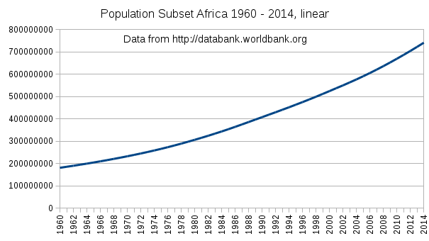
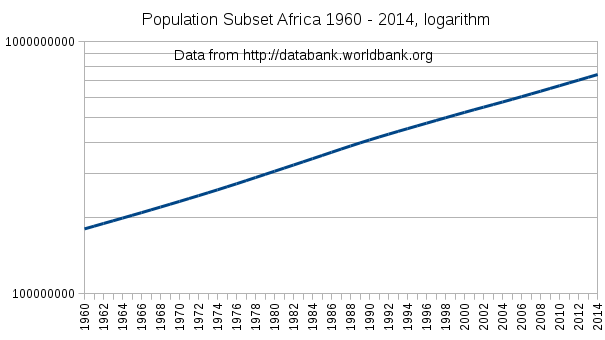
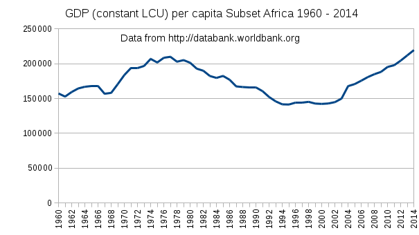

|
Hosted by the courtesy of GitHub |
The stars ASAP


 Durée du voyage intersidéral Résolutions de l'ONU en HTML Bussard Ramjet
|
DWARF : dwarf2xml
ELF : libelf examples Code presentation : ctoohtml |
|
Hosted by the courtesy of GitHub |
The stars ASAP
Durée du voyage intersidéral Résolutions de l'ONU en HTML Bussard Ramjet
|
DWARF : dwarf2xml
ELF : libelf examples Code presentation : ctoohtml |
HomeTranslation : Emmanuel Azencot Author : Emmanuel Azencot Creation : Mon Dec 25 14:29:29 CET 2017 Update: Sat Aug 3 18:29:38 CEST 2019 |
|
|
|
Lettre encyclique laudato si' du Saint Père François "Sur la sauvegarde de notre maison commune".
193. De toute manière, si dans certains cas le développement durable entraînera de nouvelles formes de croissance, dans d’autres cas, face à l’accroissement vorace et irresponsable produit durant de nombreuses décennies, il faudra penser aussi à marquer une pause en mettant certaines limites raisonnables, voire à retourner en arrière avant qu’il ne soit trop tard. Nous savons que le comportement de ceux qui consomment et détruisent toujours davantage n’est pas soutenable, tandis que d’autres ne peuvent pas vivre conformément à leur dignité humaine. C’est pourquoi l’heure est venue d’accepter une certaine décroissance dans quelques parties du monde, mettant à disposition des ressources pour une saine croissance en d’autres parties. Benoît XVI affirmait qu’« il est nécessaire que les sociétés technologiquement avancées soient disposées à favoriser des comportements plus sobres, réduisant leurs propres besoins d’énergie et améliorant les conditions de son utilisation »[135]
Ainsi soit-il
Le "Développement" est très couteux: l'étendre à toute la planéte est du suicide
Laisser quelques uns d'entre sous sélection darwinienne est à considérer
Se regrouper pour libérer la moitié de la planète de notre empreinte
Un impact environnemental faible est incompatible avec le développement
Le développement aboutit à une explosion de la population qui accroît la pression sociale
Cette fois, cherchons à abandonner quelque chose plutôt que d'ajouter. L'argent ?
Le Nord accueille la population du Sud jusqu'à ce qu'elle se stabilise à un faible niveau
Les traductions sont les bienvenues. Merci de m'envoyer votre travail, sans décoration dans un format rustique, .txt, .html, .rtf, word 95 c'est bien. Je garderais votre contribution anonyme, autant que faire se peut, si vous le souhaitez.
Si vous avez une bonne idée ... Réfléchissez y !
Deforestation in the Congo Rainforest
Collapse: How Societies Choose to Fail or Succeed
The prehistoric and preindustrial deforestation of Europe
Mutation galore
Historical Energy Production Statistics
The Far Future:2200-2249 timeline contents
Ce développement est celui qui vient d'un endroit qui a été et qui demeure surpeuplé. La dernière réorganisation démocratique des années 1700 suivis par la révolution industrielle a élevé la population européenne de 100 million en 1700 à 700 millions en 2000. Durant cette période l'Europe à grandement contribué à la déforestation, à l'extinction des espèces, au trou d'ozone et au réchauffement climatique.
Non seulement le développement est très couteux mais c'est aussi le cas du modèle post-industriel. S'il devait être atteint par le tiers monde il aggraverait notre impact qui est déjà exorbitant : Les graphiques de la consomation mondiale d'energie depuis 1820, montrent qu'évoluer vers le renouvelable n'est pas pour demain. De même, "le défi alimentaire mondial, expliqué en 18 graphiques " pour la population de 2050 n'est pas de nature à réduire notre empreinte.
Les résultats obtenus des efforts faits pour réduire notre impact sur la planète semblent insignifiants comparés à la dégradation actuelle. Répandre ce modèle partout ne va faire qu'aggraver la situation.
L'homme est une espèce endémique en Afrique et donc ce continent possède la plus grande part du génome humain fonctionnel. Le potentiel de la population en Afrique est très supérieur à celui des autres continents. Dans un lointain passé les africains ont colonisé le monde à plusieurs reprises. Au temps des colonies européennes, des Africains ont été emmenés pour remplacer les populations locales décimées par les maladies et les mauvais traitements. En dépit des très mauvaise conditions de vie, aucune de ces implantations n'a disparue.
D'un autre coté, notre médecine permet à presque tout le monde de survivre, mais nous soigner a, sur le long terme, pour effet statistique de diminuer la qualité du génome. Il est possible de corriger cela grâce aux méthodes de bébé éprouvette qui sont disponibles mais laisser le destin de l'humanité dans les mains de Dr Frankenstein est sans doute un peu tôt. Savez vous qu'il a créé une nouvelle créature mi saumon mi morue ? Peut-être serait-il bien inspiré de se concentrer sur les humains, après tout.
La vie moderne réduisant la mortalité, empêche la sélection naturelle d'opérer sur notre génome. L'hémophilie, le rétinoblastome, sont des exemples de maladies dont la prévalence est significativement supérieure dans les pays à haut niveau de vie. Les mutations délétères vont s'accumuler dans l'ADN de la population en abaissant la probabilité pour l'homme de survivre sans assistance médicale.
Ces inquiétudes sur la qualité du génome humain n'existeraient pas si au moins une partie de nous était à l'écart de la modernité et de la médecine. Mais comme nous les généralisons toutes les deux au monde entier, il en résultera la perte du foyer endémique Africain. Nous devrions plutôt laisser une partie de notre meilleur génome sur sélection naturelle.
Sommes nous sûrs que nos descendants vivrons mieux, quand la surpopulation sera partout, qu'il n'y aura plus de lions, plus de rhinocéros et même plus de requins. Le développement rend le monde incroyablement ennuyeux à mesure qu'il facilite tout.
L'extinction des espèces ne les touchent pas de manière équitable. Alors que nous détruisons les espèces au hasard, les parasites de l'homme sont favorisés. Les moustiques, poux, puces, souris, rats, pigeons et corbeaux ne sont pas près de disparaître. Continuer de pressurer la nature sélectionne les espèces qui savent utiliser la nouvelle ressource que l'homme est devenu.
Il semble que l'économie et que les politiques nationales ne soient pas sur la bonne voie. En premier lieu, nous devrions nous rappeler que la surpopulation est toujours la cause de la plupart des problèmes. En conséquense, toute solution qui conduit à une augmentation de la population devrait être écartée, et, à ce stade, tout changement doit être contraint à une décroissance progressive. La seconde chose est que la nature n'a aucun besoin de notre aide et que nous sommes le problème.
Même si beaucoup partagent ces inquiétudes, nous n'avons pas encore trouvé beaucoup d'idées qui les résolvent. Vider ces endroits et les moyens à mettre en œuvre pour y parvenir peut sembler être un rêve écologique extrémiste, mais c'est un rêve et c'est mieux que le cauchemar qui se prépare. Ce serait possible si l'intérêt des acteurs converge dessus.
Du point de vue individuel, il y a deux options : être dans la matrice ou vivre dans la nature. Ce choix devrait être offert à tous et tout le temps. Il correspond à un des plus vieux motif de socialisation : en cas d'ennui avec la communauté, aller dans la forêt. Un autre souhait récurrent est d'élever les enfants dans la "nature".
Du point de vue global, la friche devrait être laissée sur plus de la moitié de la Terre inclus les océans. L'hémisphère sud est moins peuplé, a moins de terres émergées et est aussi moins dégradé. Au contraire, le nord a déjà des infrastructures et installations industrielles. Certaines d'entre elles ont une fin de vie très longue : les centrales nucléaires ou les barrages. La frontière de la friche du sud pourrait passer par le tropique du Cancer.
Quand nous sommes questionnés sur la pauvreté et les inégalités sociales nous réagissons selon notre appréciation pour améliorer les choses. Voici quelques exemple de l'aide que nous offrons :
Comme indiqué par cette organisations Partners Worldwide choisie au hasard, "Avec quatre directions stratégiques comme guide, nous mettons le cap vers le temps du jubilé, quand toute l'humanité est réconciliée en partenariat avec Dieu.", "C'est destiné à changer la façon dont les gens voient le développement économique, rompant avec le vieux modèle de l'aide unidirectionnelle et de la charité".
Cette notion d'aide unidirectionnelle est expliquée dans cet article Donc charitables par pays : qui est le plus généreux ? . l'action de base est de sécuriser l'alimentation comme le fait cette organisation WFP's 'Assistance alimentaire pour donner un avantage' "Les programmes peuvent produire un avantage immédiat à une communauté en terme de sécurité alimentaire et de nutrition.".
Le développement de l'agriculture semble être préférable à la fourniture de nourriture selon cet article "Le tiers monde a besoin du développement de l'agriculture, et non pas de l'aide alimentaire disent les scientifiques", "Un thème récurrent est le besoin des pays en développement de mettre l'accent sur l'agriculture et la production de nourriture dans leurs politiques nationales".
Sans surprise, l'université de Stanford montre que "l'aide médicale extérieure est directement liée à un accroissement de l'espérance de vie dans les pays en développement". Pour la pratique, "les ponts médicaux rapprochent cette aide médicale en mettant en relation ceux qui possèdent et ceux qui espèrent".
USAID met en avant le besoin en infrastructures en notant que "Dans beaucoup de pays en développement, l'infrastructure de base - énergie, eau, assainissement, technologies de information et de communication, routes - est défaillante, insuffisante ou inexistante". Dans cet article du The Guardian "S'attaquer au manque d'infrastructures est vital pour les pays en développement", "Adam Smith International a produit une boîte à outils qui permet aux donneurs de maximiser l'efficacité des programmes d'infrastructures".
Il y a aussi de nombreuses initiatives autour de l'éducation, de la dette, de la transition démocratique, de l'energie renouvelable etc ... Cette offre abondante devrait couvrir la plupart des besoins du tiers monde.
UN Millennium Project: Objectifs et indicateurs
Est-ce que cette aide a apporté une solution à la pauvreté, a-t-elle stabilisé la population, a-t-elle réduit les injustices, a-t-elle amélioré la vie des gens ? En fait, la majorité de ces initiatives n'ont fait qu'apporter de nouveaux problèmes qui n'existaient pas. C.f "Partout, le "développement" spolie les populations de leur terre tribale, de leur autonomie, de leur fierté et ne leur laissent rien".
En effet, les famines en Afrique ont tué 42 000 personnes entre 1900 et 1910 alors que entre 1990 et 2000 elles en ont tué 470 000 (1), plus de dix fois plus. Dans le même temps, la population africaine, qui était de 100 millions en 1900 a atteint un milliard en 2000 (Long term population dynamics in Africa: A perspective from the urban structure). Sans surprise les problèmes ont également été multipliés par un facteur 10.
"L'hypothèse selon laquelle dans un zone forestière le changement de la densité population conduit à un changement de structure du payage a été vérifié par une étude d'une aire située dans la Province de l'Est de la Républiquye Démocratique du Congo". Maintenant la pression de la population est dix fois plus importante.
Aux Amériques, la catastrophe a commencé dès la "découverte" comme cela est décrit dans "L'Holocauste des Amerindiens et de leurs survivants", page 44 ; on y trouve la longue liste des maladies que nous leur avons transmis. Comme l'essentiel de la population originelle avait disparue, elle a été remplacée par un mélange d'européens, de locaux, et d'africains. (wikipedia: Ethnic groups in Latin America). La majorité a maintenant le choix, la favela ou la jungle.
Sur ces deux continents la flore et la faune sont remplacées par une agriculture qui n'est même pas durable. Il est probable que ces zones vont s'assécher selon le mécanisme décrit par " L'expansion à grande échelle de l'agriculture en Amazonie peuvent provoquer une réduction des précipitations". Ainsi le développement en Amazonie transforme une forêt tropicale luxuriante en un désert de type saharien.
La colonisation, puis l'exploitation économique avec une once de charité pousse ces deux grands continents vers une forte et constante poussée démographique tandis que la population reste dans la survie. C'est la situation idéale pour obtenir une poussée migratoire massive suivie d'un effondrement culturel.
Si le processus de développement se poursuit dans ces zones, elles seront bientôt des désert tandis qu'un flot incontrôlable de population se dirigera probablement vers le nord. Transformer en désert l'Afrique et l'Amazonie aura un impact global sur la climat. Nous ne pouvons nous permettre de perdre à la fois les forêts humides africaine et amazonienne et c'est exactement ce que nous faisons en soutenant le développement la-bas.
| |
 | |
 | |
 | |
| |
200 millions à 600 millions en 50 ans pour ce sous-ensemble |
|
C'est mieux que l'exponentielle. |
|
Le PIB par habitant ne montre pas la même vitalité. | |
Countries in subset, in Africa with full population and GDP data (http://databank.worldbank.org):
| |
Ghana |
Algeria |
Malawi |
Sudan |
Benin |
Togo |
|
(1) "Famines in the twentieth century", page 9, table 2. Stephen Devereux.
Jusqu'à présent nous avons essayé de soigner le tiers monde en utilisant notre expérience. Nous avons oublié que les outils que nous utilisons permettent un accroissement de la population avec lequel nous avons co-évolué. En les utilisant à tort et à travers nous obtenons le même résultat, à la différence que les populations n'en connaissent pas les défauts.
L'un de ces outils est l'argent. Il a été inventé pour améliorer nos vies en facilitant la collaboration. L'argent fournit une référence pour les échanges. Il rend instantanément les gens délirants et est cause d'une vaste gamme de désordres mentaux : fièvre de l'or, surendettement, thésaurisation, addiction au jeu, excès de travail, achat compulsif, anorexie financière, aversion au risque etc ...
Comme il est très efficace, son abandon pourrait convenir à un retour vers un équilibre naturel dans ces régions. Malheureusement, il ne peut être supprimé sans provoquer beaucoup de souffrances et de morts. La disparition de l'argent ne peut être que le signe d'un collapse économique.
De même que l'argent, la plupart des outils organisationnels, comme l'état, l'école, la finance, les médias, ne peuvent être supprimés pour la même raison, car ils vont provoquer une chute brutale de la population maximale possible.
Arrêter le développement de nouvelles infrastructures ou l'introduction de nouvelles techniques qui pourraient "aider" ces populations est probablement un meilleur pari. Peut-on réorienter de l'assistance vers d'autre objectifs comme cela a déjà été fait ? Dissuader la natalité et encourager la reforestation sont des points qui doivent être pris en considération en priorité, mais ils ne sont pas de nature à changer la trajectoire.
La combinaison gagnante se trouve à l'intersection de l'organisation et
de la nature.
Ce qui est super c'est de tuer un lion avec un fusil depuis un tout
terrain climatisé.
Enlevez toutes les aides et cela deviendra beaucoup plus intéressant.
Tuer un lion devrait être possible, après une longue navigation sur un
bateau à voile en bois, quelques centaines de km à pied, l'aide des
locaux, un entraînement au maniement de la sagaie pour avoir une chance
de réussir. Pas de photos pas de trophées et un retour interminable. Il y
a des volontaires ?
Quelque soit la difficulté et le niveau requis, il y en aura toujours
quelque uns. Il n'y a rien à organiser ou à faire pour que la chasse au
lion devienne très difficile et dangereuse. C'est seulement un autre
mode d'organisation en Afrique.
(1) "Technofix: Why Technology Won’t Save Us or the Environment", Michael and Joyce Huesemann.
Au Bangladesh, en Inde, en Europe, on s'accommode bien d'une
population nombreuse. Les outils qui ont été inventés pour permettre
cela sont brillants : l'écriture, l'astronomie, l'argent, l'école, les
maths, etc ... C'est très généreux de notre part de vouloir que ces idées
soient partagées par tous pour être heureux. Cela montre une fois de
plus que nous avons fait le choix de nous entraider.
D'un autre coté, nos méthodes ne peuvent être étendues au monde entier,
spécialement aux endroits qui ont la plus forte bio-diversité, et ce,
uniquement parce qu'il faut conserver des marges. Ainsi, la seule aide
que nous pouvons apporter est d'accueillir les gens qui veulent partager
nos choix et laisser ceux qui préfèrent rester en dehors du jeu. Et le
jeu cessera au fur et a mesure que la population évacuera.
Au stade actuel, il y a 1,5 milliard de personnes à évacuer, moins la
petite part de ceux qui resteront. Attendre fait que ce nombre
augmentera probablement jusqu'à la formation d'un flux incontrôlable de
gens auquel nous ne sommes pas préparés.
Pour réussir le transfert, nous avons besoin de mettre en place un
parcours d'intégration à haut débit pour accueillir les migrants. Le
parcours actuel concerne plutôt les adultes qui est loin d'être assez
rapide pour avaler assez de gens pour vider des surfaces significatives.
L'effort à fournir pour les adultes est important tandis qu'ils
resteront bloqués dans les moins bonnes places offertes par nos
organisations.
Un moyen plus efficace serait d'évacuer les enfants. "L'adoption
d'un enfant, spécialement un enfant issu d'un pays du tiers monde et
lui donner une bonne maison, une bonne éducation, et un meilleur futur
est l'un des plus beau cadeau que vous puissiez faire". L'inconvénient de la voie de l'adoption est la lenteur du processus qui finalement ne convient qu'aux orphelins.
Merci à kat, nat et fanfan pour m'avoir écouté.
|
Hosted by the courtesy of GitHub |
The stars ASAP
Durée du voyage intersidéral Résolutions de l'ONU en HTML Bussard Ramjet
|
DWARF : dwarf2xml
ELF : libelf examples Code presentation : ctoohtml |